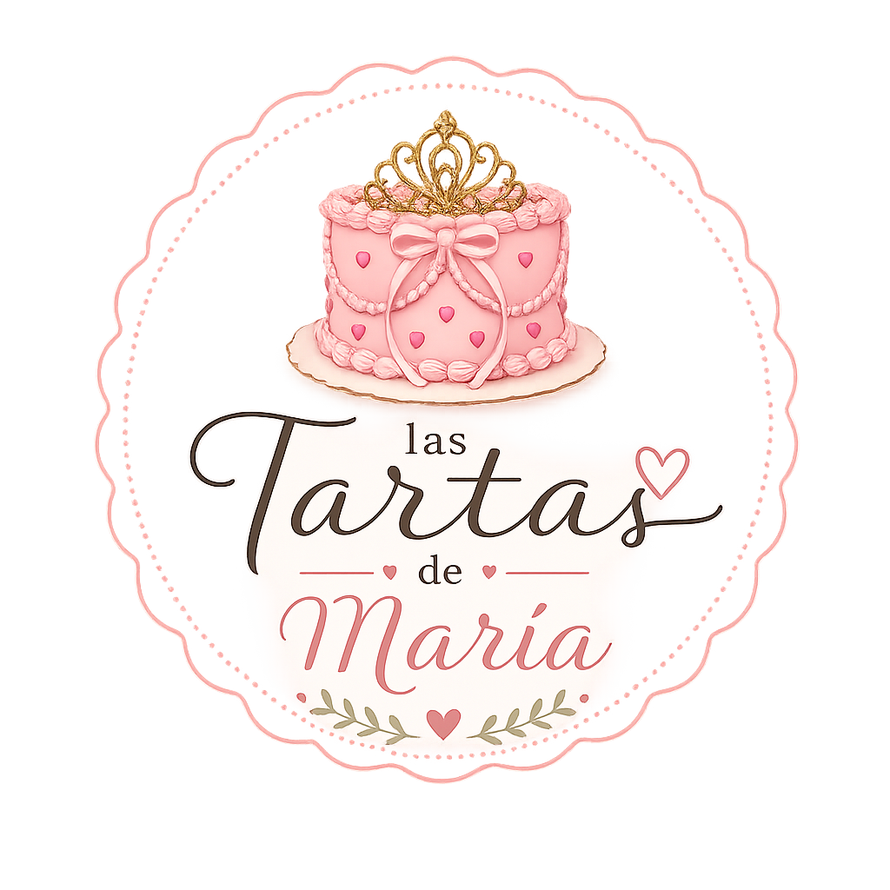

Miss Mundo Lugo

Una tarta de fondant elegante diseñada para celebrar un título muy especial. Detalles delicados y acabado pulcro para una ocasión única e inolvidable.

Hacer pedidoCada tarta tiene una historia detrás. Descubre los detalles, la inspiración y el sabor de cada una de nuestras creaciones más especiales.
Una tarta de fondant elegante diseñada para celebrar un título muy especial. Detalles delicados y acabado pulcro para una ocasión única e inolvidable.

Para los fans del mejor. Tarta de fondant personalizada con la esencia de Messi, perfecta para cumpleaños de auténticos amantes del fútbol.

Minimalismo con personalidad. Una cobertura blanca impecable y un mensaje escrito a mano que convierte lo sencillo en memorable.

Shenron, Goku y las siete bolas de dragón reunidas en una sola tarta. Una explosión de color y detalles para los que crecieron con la saga.

Una pareja, un beso y todo lo demás sobra. Tarta romántica de líneas limpias, pensada para aniversarios y pedidas de mano íntimas.

Luffy, el Thousand Sunny y toda la tripulación al completo. Una tarta de aventuras acompañada de cupcakes temáticos para llevar el One Piece a casa.

Luffy y Pikachu comparten protagonismo en esta colección de cupcakes con Poké Ball y frutas del diablo. Perfectos para mesas dulces de fiesta friki.

Degradado azul cielo, topper dorado y un número 24 que brilla. Sencilla, elegante y perfecta para cumpleaños con estilo.

Ramas, hojas y flores silvestres hechas a mano. Una tarta que parece arrancada de un jardín, ideal para bodas al aire libre y celebraciones primaverales.

Cielo, nubes suaves y un topper con el nombre del peque. Una tarta tierna y muy fotogénica para baby showers y primeros cumpleaños.

Base blanca impoluta salpicada de pequeños corazones rojos. Romántica, delicada y con un mensaje que lo dice todo.

Rosa, lazo, corazones y corona dorada. La tarta perfecta para cumpleaños infantiles temáticos de princesas o para quien quiera sentirse una.

Flores modeladas en pasta de azúcar en tonos pastel. Una tarta fresca y alegre que transmite primavera en cada bocado.

Degradado marino con conchas, estrellas de mar y perlas. Ideal para cumpleaños veraniegos, comuniones y celebraciones junto al mar.

Rosetas de crema batida, virutas de chocolate y velas. La tarta de cumpleaños de siempre, pero hecha con mimo y sabor casero.

Crema rosa y dedicatoria personalizada. Una tarta cercana y familiar, perfecta para cumpleaños en casa con los que más quieres.

Negro, gótico y con actitud. Miércoles en versión dulce para fans de la serie que buscan algo diferente y lleno de personalidad.

Cobertura blanca de fondant con un mensaje escrito a mano. Limpia, elegante y completamente personalizable con cualquier nombre.

Bailarinas, perlas de azúcar y un rosa suave que lo envuelve todo. Una tarta soñadora para pequeñas amantes del ballet.

Rayo McQueen, Mate y la mítica Route 66. Una tarta llena de velocidad y color que hará las delicias de los más peques (y de los que no lo son tanto).
¿Te ha gustado alguna? Cuéntanos qué tarta imaginas.
Hacer pedido